Você já teve um tema de nomes para sua aliança e de repente se esqueceu de quem era quem depois que mudaram seus nomes no jogo?
Este recurso permite que os líderes acompanhem os apelidos que os membros escolhem no jogo; o registro é baseado no UID e pode ser consultado usando um comando de lista muito fácil de ler. Ao usar o UID com o bot, você também pode aproveitar o recurso de rastreamento de MVP, que exibirá seu nome alternativo atual quando você inserir as informações.
Digite o comando "/setup" para definir o nome da aliança e garantir que as funções apropriadas estejam configuradas no servidor para usar o bot.
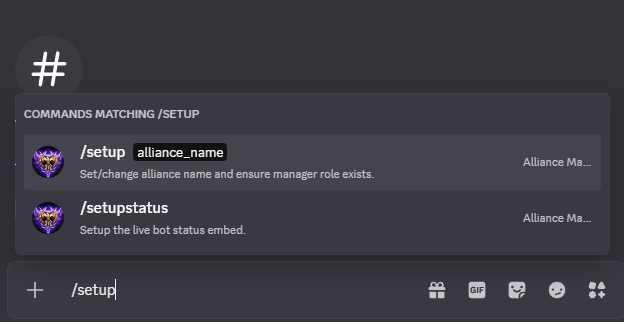
Digite a abreviação e o nome da sua aliança.
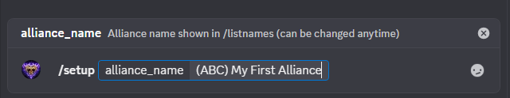
Confirme os detalhes da configuração.
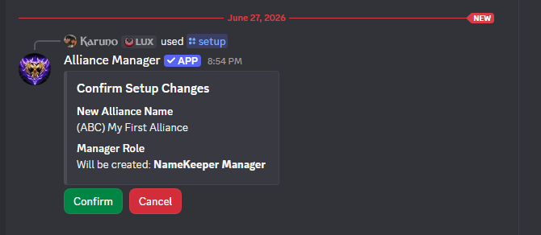
A mensagem de confirmação exibe o nome da aliança inserido e as funções criadas para usar o bot.
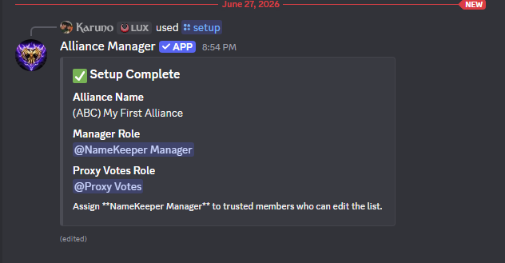
Digite o comando "/addmember"
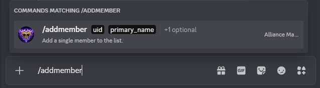
Digite seu UID e seu nome principal no jogo.
Se eles já tiverem um apelido alternativo, você também pode inseri-lo.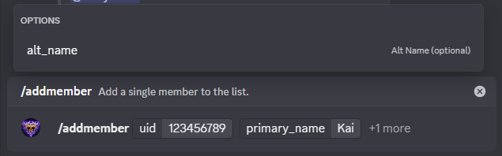
O bot confirmará as informações inseridas e, após a confirmação, os adicionará à lista.
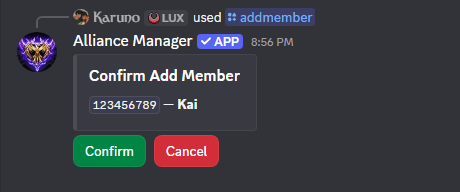
Uma vez adicionado, as informações aparecem em uma mensagem de confirmação.
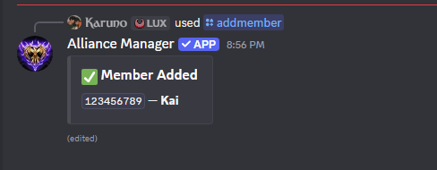
Para ver a lista de membros, use o comando "/listmembers".
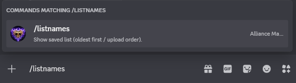
A lista integrada mostrará todos os membros adicionados e seus apelidos atuais.
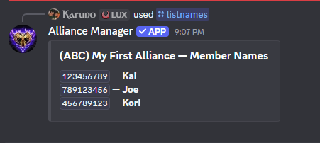
Outro recurso útil do bot para adicionar vários novos membros de uma só vez é o comando "/bulkadd".
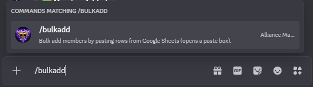
Ao inserir este comando, uma nova janela será aberta para copiar e colar uma lista do Planilhas Google ou do Excel.
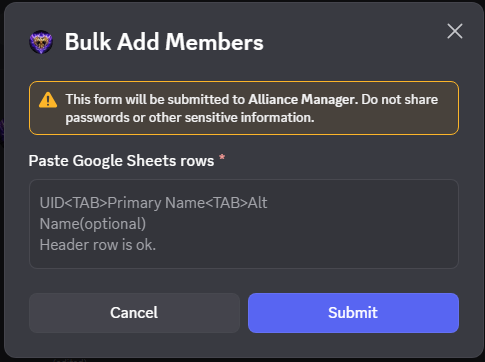
Depois de colar as informações, envie-as; uma mensagem de confirmação com os detalhes será exibida. Se houver UIDs duplicados, o sistema os omitirá.
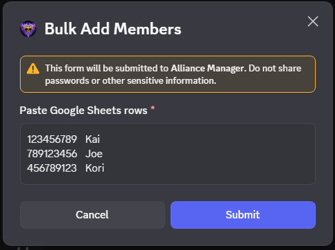
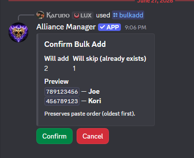
A mensagem de confirmação final mostrará apenas o número de membros adicionados e o número de membros omitidos. Para ver a lista completa de membros, use o comando "/listmembers".
← Voltar ao topo